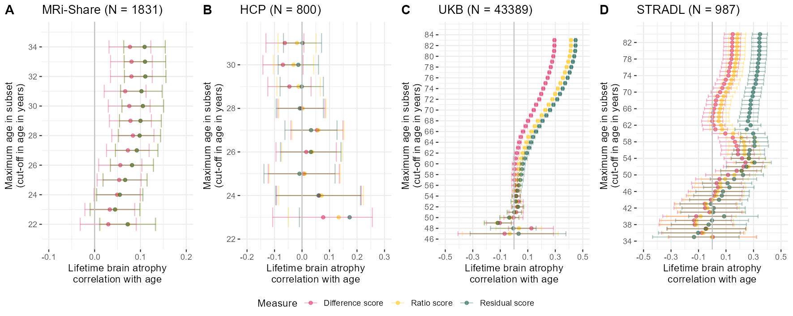
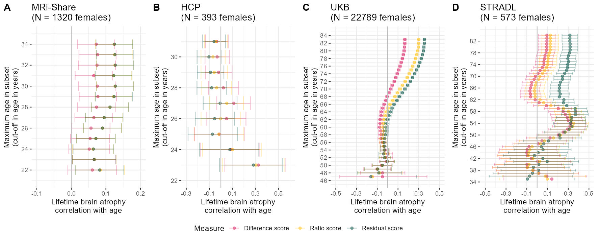
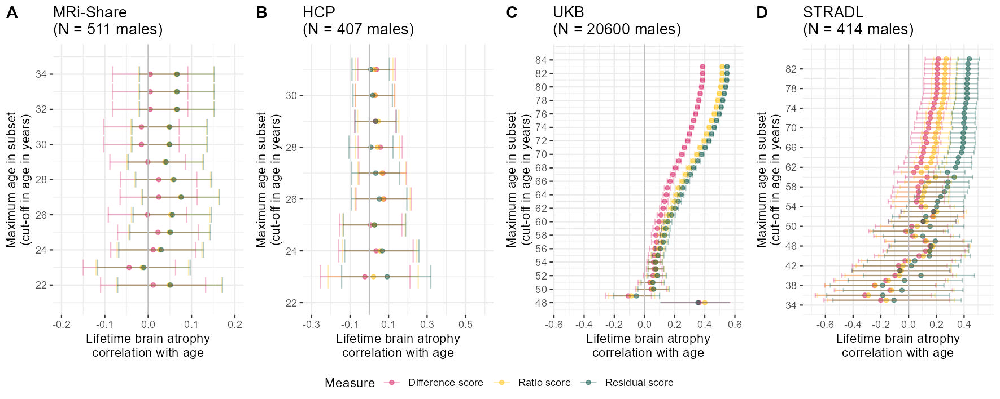

Code
library(ggplot2)
library(data.table)
library(ggpubr)
library(patchwork)Results produced by the code below are described in the manuscript under section:
Measures of LBA indicated age-associated brain shrinkage.
The traits used for correlation analysis were derived using code displayed in ‘Data preparation’: UKB: neuroimaging & phenotypic data..
This function expects a data set with the variables age, and the three LBA measures. The ageCut option takes a vector of different cut-off ages.
successivelyReduceAge = function(data = Share, ageCut = ageCut){
# object to store results
storeNames = c("Age cut-off value", "Cor", "p", "ci_l", "ci_u", "Measure")
store = as.data.frame(matrix(nrow = length(ageCut)*3, ncol = length(storeNames)))
names(store) = storeNames
# iterate over each age cut-off and calculate scores
for(i in ageCut){
# store which age cut off iteration this is
loc = which(is.na(store$`Age cut-off value`))[1]
store[loc:(loc+2),"Age cut-off value"] = i
# cut sample
Youngdata = data[which(data$Age <= i),]
# calculate correlations
## difference
store[loc,"Cor"] =
with(Youngdata, cor.test(Age, diff))$estimate
store[loc,"p"] =
with(Youngdata, cor.test(Age, diff))$p.value
store[loc,"ci_l"] =
with(Youngdata, cor.test(Age, diff))$conf.int[1]
store[loc,"ci_u"] =
with(Youngdata, cor.test(Age, diff))$conf.int[2]
store[loc,"Measure"] = "Difference score"
## ratio
store[loc+1,"Cor"] =
with(Youngdata, cor.test(Age, ratio))$estimate
store[loc+1,"p"] =
with(Youngdata, cor.test(Age, ratio))$p.value
store[loc+1,"ci_l"] =
with(Youngdata, cor.test(Age, ratio))$conf.int[1]
store[loc+1,"ci_u"] =
with(Youngdata, cor.test(Age, ratio))$conf.int[2]
store[loc+1,"Measure"] = "Ratio score"
## residual
store[loc+2,"Cor"] =
with(Youngdata, cor.test(Age, resid))$estimate
store[loc+2,"p"] =
with(Youngdata, cor.test(Age, resid))$p.value
store[loc+2,"ci_l"] =
with(Youngdata, cor.test(Age, resid))$conf.int[1]
store[loc+2,"ci_u"] =
with(Youngdata, cor.test(Age, resid))$conf.int[2]
store[loc+2,"Measure"] = "Residual score"
}
return(store)
}# UKB - use cross-sectional data we're also using for GWAS
UKB = fread(paste0(wd, "/UKB_CrossNeuroIDP_noOutliers.txt"))
age = fread(paste0(wd, "/UKB_covarGWAS.txt"))
UKB = merge(UKB, age[,c("FID", "age","sex")], by = "FID")
UKB$Sample = "UKB"
names(UKB)[which(names(UKB) == "IID")] = "ID"
names(UKB)[which(names(UKB) == "age")] = "Age"
# restrict to fam file
fam = fread(paste0(wd, "/ukb_neuroimaging_brainAtrophy_GWASinput.fam"))
UKB = UKB[UKB$FID %in% fam$V1,]
# for more intuitive interpretation, we will flip the associations for resid and ratio sscore
# larger score = more atrophy
UKB$resid = UKB$resid*(-1)
UKB$resid_stand = UKB$resid_stand*(-1)
UKB$ratio = UKB$ratio*(-1)
UKB$ratio_stand = UKB$ratio_stand*(-1)
#####################
## Human Connectome Project
#####################
# read in HCP data
HCP = fread(paste0(wd,"/unrestricted_hcp_freesurfer.csv"))
HCP = HCP[,c("Subject", "Gender", "FS_InterCranial_Vol", "FS_BrainSeg_Vol_No_Vent")]
names(HCP) = c("ID", "Sex", "ICV", "TBV")
# add age information
HCPage = fread(paste0(wd, "/RESTRICTED_annafurtjes_12_14_2023_4_18_2.csv"))
names(HCPage)[which(names(HCPage) == "Subject")] = "ID"
names(HCPage)[which(names(HCPage) == "Age_in_Yrs")] = "Age"
HCP = merge(HCP, HCPage[,c("ID","Age")], by = "ID")
# as outlined elsewhere, empirical investigations warrant to use an age cut-off of 31 years in this sample
HCP = HCP[which(HCP$Age <= 31),]
# convert mm3 estimates to more intuitive cm3 estimates
HCP$ICV = HCP$ICV/1000
HCP$TBV = HCP$TBV/1000
# estimate brain atrophy from single MRI scan
HCP$diff = HCP$ICV - HCP$TBV
HCP$ratio = HCP$TBV / HCP$ICV
# Quality control:
#print(paste0("Some participants have negative difference scores and ratio scores > 1, which means that their ICV estimate is smaller than their TBV estimate. This must be an error as the skull always surrounds the brain. Those ", sum((HCP$diff < 0))," HCP participants were excluded from the data set."))
deletedHCP = sum(HCP$diff < 0)
# delete those from data
if(sum(HCP$diff < 0) != 0){HCP=HCP[-which(HCP$diff < 0),]}
# estimate residual model
model <- lm(TBV ~ ICV, data = HCP)
HCP$resid = as.vector(resid(model, na.rm=T))
# for more intuitive interpretation, we will flip the associations for resid and ratio sscore
# larger score = more atrophy
HCP$resid = HCP$resid*(-1)
HCP$ratio = HCP$ratio*(-1)
# standardise variables
HCP$diff_stand = as.vector(scale(HCP$diff))
HCP$ratio_stand = as.vector(scale(HCP$ratio))
HCP$resid_stand = as.vector(scale(HCP$resid))
#####################
## MRi-Share
#####################
# read in MRi-Share
Share = fread(paste0(wd, "/MRiShare_global_IDPs_BSAF2021.csv"))
Share$TBV = Share$SPM_GM_Volume + Share$SPM_WM_Volume
Share = Share[,c("ID", "Age", "Sex", "eTIV", "TBV")]
names(Share) = c("ID", "Age", "Sex", "ICV", "TBV")
# convert mm3 estimates to more intuitive cm3 estimates
Share$ICV = Share$ICV/1000
Share$TBV = Share$TBV/1000
# estimate brain atrophy from single MRI scan
Share$diff = Share$ICV - Share$TBV
Share$ratio = Share$TBV / Share$ICV
model <- lm(TBV ~ ICV, data = Share)
Share$resid = resid(model)
# save intercept value from the regression
Shareintercept = summary(model)$coefficients[1,1]
# for more intuitive interpretation, we will flip the associations for resid and ratio sscore
# larger score = more atrophy
Share$resid = Share$resid*(-1)
Share$ratio = Share$ratio*(-1)
# standardise variables
Share$diff_stand = as.vector(scale(Share$diff))
Share$ratio_stand = as.vector(scale(Share$ratio))
Share$resid_stand = as.vector(scale(Share$resid))# determine age cut-offs to iterate through
ageCut = seq(from = 22, to = max(Share$Age), by = 1)
# use function to successively reduce age and determine the correlation between age and atrophy measures
agePlotShare = successivelyReduceAge(data = Share, ageCut = ageCut)
pShare = ggplot(data = agePlotShare)+
geom_point(aes(x = Cor, y = `Age cut-off value`, colour = Measure), alpha = 0.5)+
geom_errorbar(aes(y = `Age cut-off value`, xmin = ci_l, xmax = ci_u, colour = Measure), alpha = 0.3)+
geom_vline(xintercept = 0, color = "grey")+
#geom_hline(yintercept = 27, color = "grey")+
xlab("Lifetime brain atrophy\ncorrelation with age")+
ylab("Maximum age in subset\n(cut-off in age in years)")+
scale_y_continuous(limits = c(21, 35), breaks = seq(from = 20, to = 36, by = 2))+
scale_x_continuous(limits = c(-0.1, 0.2), breaks = seq(from = -0.5, to = 0.35, by = 0.1))+
scale_color_manual(values = c("#D81B60","#FFC107","#004D40"))+
ggtitle(paste0("MRi-Share (N = ", nrow(Share),")"))+
theme_bw()+
theme(panel.border = element_blank())
# determine age cut-offs to iterate through
ageCut = seq(from = 23, to = max(HCP$Age), by = 1)
# use function to successively reduce age and determine the correlation between age and atrophy measures
successivelyYoungertHCP = successivelyReduceAge(data = HCP, ageCut = ageCut)
pHCP = ggplot(data = successivelyYoungertHCP)+
geom_point(aes(x = Cor, y = `Age cut-off value`, colour = Measure), alpha = 0.5)+
geom_errorbar(aes(y = `Age cut-off value`, xmin = ci_l, xmax = ci_u, colour = Measure), alpha = 0.3)+
geom_vline(xintercept = 0, color = "grey")+
#geom_hline(yintercept = 29, color = "grey")+
xlab("Lifetime brain atrophy\ncorrelation with age")+
ylab("Maximum age in subset\n(cut-off in age in years)")+
scale_y_continuous(limits = c(22, 31.5), breaks = seq(from = 20, to = 36, by = 2))+
scale_x_continuous(limits = c(-0.2, 0.3), breaks = seq(from = -0.5, to = 0.35, by = 0.1))+
scale_color_manual(values = c("#D81B60","#FFC107","#004D40"))+
ggtitle(paste0("HCP (N = ", nrow(HCP),")"))+
theme_bw()+
theme(panel.border = element_blank())
#### UKB
if(mean(UKB$Age > 100)){UKB$Age = UKB$Age /12}
# determine age cut-offs to iterate through
ageCut = seq(from = 47, to = max(UKB$Age), by = 1)
# use function to successively reduce age and determine the correlation between age and atrophy measures
agePlotUKB= successivelyReduceAge(data = UKB, ageCut = ageCut)
pUKB = ggplot(data = agePlotUKB)+
geom_point(aes(x = Cor, y = `Age cut-off value`, colour = Measure), alpha = 0.5)+
geom_errorbar(aes(y = `Age cut-off value`, xmin = ci_l, xmax = ci_u, colour = Measure), alpha = 0.3)+
geom_vline(xintercept = 0, color = "grey")+
xlab("Lifetime brain atrophy\ncorrelation with age")+
ylab("Maximum age in subset\n(cut-off in age in years)")+
scale_y_continuous(limits = c(46, 84.5), breaks = seq(from = 44, to = 84, by = 2))+
scale_x_continuous(limits = c(-0.5, 0.5), breaks = seq(from = -0.5, to = 0.5, by = 0.2))+
ggtitle(paste0("UKB (N = ", nrow(UKB),")"))+
scale_color_manual(values = c("#D81B60","#FFC107","#004D40"))+
theme_bw()+
theme(panel.border = element_blank())
# determine age cut-offs to iterate through
ageCut = seq(from = 35, to = max(STRADL$Age), by = 1)
########
# change direction STRADL
STRADL$resid <- STRADL$resid*(-1)
STRADL$ratio <- STRADL$ratio*(-1)
# use function to successively reduce age and determine the correlation between age and atrophy measures
agePlotSTRADL = successivelyReduceAge(data = STRADL, ageCut = ageCut)
pSTRADL = ggplot(data = agePlotSTRADL)+
geom_point(aes(x = Cor, y = `Age cut-off value`, colour = Measure), alpha = 0.5)+
geom_errorbar(aes(y = `Age cut-off value`, xmin = ci_l, xmax = ci_u, colour = Measure), alpha = 0.3)+
geom_vline(xintercept = 0, color = "grey")+
#geom_hline(yintercept = 27, color = "grey")+
xlab("Lifetime brain atrophy\ncorrelation with age")+
ylab("Maximum age in subset\n(cut-off in age in years)")+
scale_y_continuous(limits = c(34.5, 84.5), breaks = seq(from = 34, to = 84, by = 4))+
scale_x_continuous(limits = c(-0.5, 0.5), breaks = seq(from = -0.5, to = 0.5, by = 0.2))+
scale_color_manual(values = c("#D81B60","#FFC107","#004D40"))+
ggtitle(paste0("STRADL (N = ", nrow(STRADL),")"))+
theme_bw()+
theme(panel.border = element_blank())
ggsave("Fig3_indiv.jpg", bg = "white",plot = newFig2bottoM, width = 30, height = 12, units = "cm", dpi = 150)
Plots generated below are in Supplementary Plot 13.
###### FEMALES
# determine age cut-offs to iterate through
ageCut = seq(from = 22, to = max(Share$Age), by = 1)
# use function to successively reduce age and determine the correlation between age and atrophy measures
agePlotShare = successivelyReduceAge(data = Share[which(Share$Sex == "F"),], ageCut = ageCut)
pShareF = ggplot(data = agePlotShare)+
geom_point(aes(x = Cor, y = `Age cut-off value`, colour = Measure), alpha = 0.5)+
geom_errorbar(aes(y = `Age cut-off value`, xmin = ci_l, xmax = ci_u, colour = Measure), alpha = 0.3)+
geom_vline(xintercept = 0, color = "grey")+
#geom_hline(yintercept = 27, color = "grey")+
xlab("Lifetime brain atrophy\ncorrelation with age")+
ylab("Maximum age in subset\n(cut-off in age in years)")+
scale_y_continuous(limits = c(21, 35), breaks = seq(from = 20, to = 36, by = 2))+
scale_x_continuous(limits = c(-0.1, 0.2), breaks = seq(from = -0.5, to = 0.35, by = 0.1))+
scale_color_manual(values = c("#D81B60","#FFC107","#004D40"))+
ggtitle(paste0("MRi-Share\n(N = ", nrow(Share[which(Share$Sex == "F"),])," females)"))+
theme_bw()+
theme(panel.border = element_blank())
# determine age cut-offs to iterate through
ageCut = seq(from = 23, to = max(HCP$Age), by = 1)
# use function to successively reduce age and determine the correlation between age and atrophy measures
successivelyYoungertHCP = successivelyReduceAge(data = HCP[which(HCP$Sex == "F")], ageCut = ageCut)
pHCPF = ggplot(data = successivelyYoungertHCP)+
geom_point(aes(x = Cor, y = `Age cut-off value`, colour = Measure), alpha = 0.5)+
geom_errorbar(aes(y = `Age cut-off value`, xmin = ci_l, xmax = ci_u, colour = Measure), alpha = 0.3)+
geom_vline(xintercept = 0, color = "grey")+
#geom_hline(yintercept = 29, color = "grey")+
xlab("Lifetime brain atrophy\ncorrelation with age")+
ylab("Maximum age in subset\n(cut-off in age in years)")+
scale_y_continuous(limits = c(22, 31.5), breaks = seq(from = 20, to = 36, by = 2))+
scale_x_continuous(limits = c(-0.3, 0.6), breaks = seq(from = -0.3, to = 0.6, by = 0.2))+
scale_color_manual(values = c("#D81B60","#FFC107","#004D40"))+
ggtitle(paste0("HCP\n(N = ", nrow(HCP[which(HCP$Sex == "F")])," females)"))+
theme_bw()+
theme(panel.border = element_blank())
#### UKB
if(mean(UKB$Age > 100)){UKB$Age = UKB$Age /12}
# determine age cut-offs to iterate through
ageCut = seq(from = 47, to = max(UKB$Age), by = 1)
# use function to successively reduce age and determine the correlation between age and atrophy measures
agePlotUKB= successivelyReduceAge(data = UKB[UKB$sex == 1,], ageCut = ageCut)
pUKBF = ggplot(data = agePlotUKB)+
geom_point(aes(x = Cor, y = `Age cut-off value`, colour = Measure), alpha = 0.5)+
geom_errorbar(aes(y = `Age cut-off value`, xmin = ci_l, xmax = ci_u, colour = Measure), alpha = 0.3)+
geom_vline(xintercept = 0, color = "grey")+
xlab("Lifetime brain atrophy\ncorrelation with age")+
ylab("Maximum age in subset\n(cut-off in age in years)")+
scale_y_continuous(limits = c(46, 84.5), breaks = seq(from = 44, to = 84, by = 2))+
scale_x_continuous(limits = c(-0.5, 0.5), breaks = seq(from = -0.5, to = 0.5, by = 0.2))+
ggtitle(paste0("UKB\n(N = ", nrow(UKB[UKB$sex == 1,])," females)"))+
scale_color_manual(values = c("#D81B60","#FFC107","#004D40"))+
theme_bw()+
theme(panel.border = element_blank())
# determine age cut-offs to iterate through
ageCut = seq(from = 35, to = max(STRADL$Age), by = 1)
########
# change direction STRADL
#STRADL$resid <- STRADL$resid*(-1)
#STRADL$ratio <- STRADL$ratio*(-1)
# use function to successively reduce age and determine the correlation between age and atrophy measures
agePlotSTRADL = successivelyReduceAge(data = STRADL[STRADL$Sex == 0,], ageCut = ageCut)
pSTRADLF = ggplot(data = agePlotSTRADL)+
geom_point(aes(x = Cor, y = `Age cut-off value`, colour = Measure), alpha = 0.5)+
geom_errorbar(aes(y = `Age cut-off value`, xmin = ci_l, xmax = ci_u, colour = Measure), alpha = 0.3)+
geom_vline(xintercept = 0, color = "grey")+
#geom_hline(yintercept = 27, color = "grey")+
xlab("Lifetime brain atrophy\ncorrelation with age")+
ylab("Maximum age in subset\n(cut-off in age in years)")+
scale_y_continuous(limits = c(34.5, 84.5), breaks = seq(from = 34, to = 84, by = 4))+
scale_x_continuous(limits = c(-0.5, 0.5), breaks = seq(from = -0.5, to = 0.5, by = 0.2))+
scale_color_manual(values = c("#D81B60","#FFC107","#004D40"))+
ggtitle(paste0("STRADL\n(N = ", nrow(STRADL[STRADL$Sex == 0,])," females)"))+
theme_bw()+
theme(panel.border = element_blank())
AgecorrFEMALES = ggarrange(pShareF, pHCPF, pUKBF, pSTRADLF, labels = c("A","B","C","D"), common.legend = T, legend = "bottom", nrow=1)
ggsave("AgeCorr_FEMALES.jpg", bg = "white",plot = AgecorrFEMALES, width = 30, height = 12, units = "cm", dpi = 150)
###### MALES
# determine age cut-offs to iterate through
ageCut = seq(from = 22, to = max(Share$Age), by = 1)
# use function to successively reduce age and determine the correlation between age and atrophy measures
agePlotShare = successivelyReduceAge(data = Share[which(Share$Sex == "M"),], ageCut = ageCut)
pShareM = ggplot(data = agePlotShare)+
geom_point(aes(x = Cor, y = `Age cut-off value`, colour = Measure), alpha = 0.5)+
geom_errorbar(aes(y = `Age cut-off value`, xmin = ci_l, xmax = ci_u, colour = Measure), alpha = 0.3)+
geom_vline(xintercept = 0, color = "grey")+
#geom_hline(yintercept = 27, color = "grey")+
xlab("Lifetime brain atrophy\ncorrelation with age")+
ylab("Maximum age in subset\n(cut-off in age in years)")+
scale_y_continuous(limits = c(21, 35), breaks = seq(from = 20, to = 36, by = 2))+
scale_x_continuous(limits = c(-0.2, 0.2), breaks = seq(from = -0.5, to = 0.35, by = 0.1))+
scale_color_manual(values = c("#D81B60","#FFC107","#004D40"))+
ggtitle(paste0("MRi-Share\n(N = ", nrow(Share[which(Share$Sex == "M"),])," males)"))+
theme_bw()+
theme(panel.border = element_blank())
# determine age cut-offs to iterate through
ageCut = seq(from = 23, to = max(HCP$Age), by = 1)
# use function to successively reduce age and determine the correlation between age and atrophy measures
successivelyYoungertHCP = successivelyReduceAge(data = HCP[which(HCP$Sex == "M")], ageCut = ageCut)
pHCPM = ggplot(data = successivelyYoungertHCP)+
geom_point(aes(x = Cor, y = `Age cut-off value`, colour = Measure), alpha = 0.5)+
geom_errorbar(aes(y = `Age cut-off value`, xmin = ci_l, xmax = ci_u, colour = Measure), alpha = 0.3)+
geom_vline(xintercept = 0, color = "grey")+
#geom_hline(yintercept = 29, color = "grey")+
xlab("Lifetime brain atrophy\ncorrelation with age")+
ylab("Maximum age in subset\n(cut-off in age in years)")+
scale_y_continuous(limits = c(22, 31.5), breaks = seq(from = 20, to = 36, by = 2))+
scale_x_continuous(limits = c(-0.3, 0.6), breaks = seq(from = -0.3, to = 0.6, by = 0.2))+
scale_color_manual(values = c("#D81B60","#FFC107","#004D40"))+
ggtitle(paste0("HCP\n(N = ", nrow(HCP[which(HCP$Sex == "M")])," males)"))+
theme_bw()+
theme(panel.border = element_blank())
#### UKB
if(mean(UKB$Age > 100)){UKB$Age = UKB$Age /12}
# determine age cut-offs to iterate through
ageCut = seq(from = 48, to = max(UKB$Age), by = 1)
# use function to successively reduce age and determine the correlation between age and atrophy measures
agePlotUKB= successivelyReduceAge(data = UKB[UKB$sex == 0,], ageCut = ageCut)
pUKBM = ggplot(data = agePlotUKB)+
geom_point(aes(x = Cor, y = `Age cut-off value`, colour = Measure), alpha = 0.5)+
geom_errorbar(aes(y = `Age cut-off value`, xmin = ci_l, xmax = ci_u, colour = Measure), alpha = 0.3)+
geom_vline(xintercept = 0, color = "grey")+
xlab("Lifetime brain atrophy\ncorrelation with age")+
ylab("Maximum age in subset\n(cut-off in age in years)")+
scale_y_continuous(limits = c(48, 84.5), breaks = seq(from = 44, to = 84, by = 2))+
scale_x_continuous(limits = c(-0.55, 0.6), breaks = seq(from = -1, to = 0.9, by = 0.2))+
ggtitle(paste0("UKB\n(N = ", nrow(UKB[UKB$sex == 0,])," males)"))+
scale_color_manual(values = c("#D81B60","#FFC107","#004D40"))+
theme_bw()+
theme(panel.border = element_blank())
# determine age cut-offs to iterate through
ageCut = seq(from = 35, to = max(STRADL$Age), by = 1)
########
# change direction STRADL
#STRADL$resid <- STRADL$resid*(-1)
#STRADL$ratio <- STRADL$ratio*(-1)
# use function to successively reduce age and determine the correlation between age and atrophy measures
agePlotSTRADL = successivelyReduceAge(data = STRADL[STRADL$Sex == 1,], ageCut = ageCut)
pSTRADLM = ggplot(data = agePlotSTRADL)+
geom_point(aes(x = Cor, y = `Age cut-off value`, colour = Measure), alpha = 0.5)+
geom_errorbar(aes(y = `Age cut-off value`, xmin = ci_l, xmax = ci_u, colour = Measure), alpha = 0.3)+
geom_vline(xintercept = 0, color = "grey")+
#geom_hline(yintercept = 27, color = "grey")+
xlab("Lifetime brain atrophy\ncorrelation with age")+
ylab("Maximum age in subset\n(cut-off in age in years)")+
scale_y_continuous(limits = c(34.5, 84.5), breaks = seq(from = 34, to = 84, by = 4))+
scale_x_continuous(limits = c(-0.7, 0.55), breaks = seq(from = -1, to = 0.55, by = 0.2))+
scale_color_manual(values = c("#D81B60","#FFC107","#004D40"))+
ggtitle(paste0("STRADL\n(N = ", nrow(STRADL[STRADL$Sex == 1,])," males)"))+
theme_bw()+
theme(panel.border = element_blank())
AgecorrMALES = ggarrange(pShareM, pHCPM, pUKBM, pSTRADLM, labels = c("A","B","C","D"), common.legend = T, legend = "bottom", nrow=1)
ggsave("AgeCorr_MALES.jpg", bg = "white",plot = AgecorrMALES, width = 30, height = 12, units = "cm", dpi = 150)